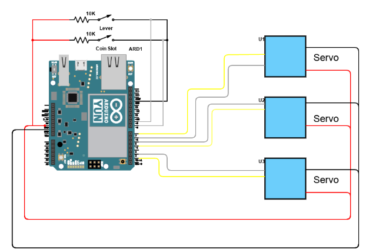

Electrical Design
The electrical design for the slot machine is rather straightforward. The main components include the servos, lever, and IR sensor that all needs to be integrated and wired to our Arduino. Some cable management was done to the best of our capability.

Coin Slot IR Sensor
The electrical design for the coin slot was based on the electrical design for the IR sensors in Mini Project 3. We have a 10k and 200 ohm resistor each connecting to one leg of the sensor, and sensing the value to see if there is an object in front of the sensor.
Continuous Rotation Servos
The servos each have four wires: PWR, GND, PWM, and Sensor Feedback. PWR and GND connect to the breadboard’s power rail which is powered by the Arduino’s 5V supply. PWM control signal comes straight out of the Arduino’s PWM ports and is tuned by the onboard software. Lastly, the Sensor Feedback line tells us the servo position via pulse width, so we have software handling the conversion from pulse width to relative positioning as well.
Lever
The lever works as a very simple switch with two ends of a wire and a 10k resistor. When the ends of the wire touch, the Arduino picks up the HIGH signal and stops the motor from spinning.